#install.packages('exiftoolr', repos = "http://cran.us.r-project.org")
library(exiftoolr)Working with EXIF Data
Timothy Monteath ![]()
Hello!
The below webpage is a quick introduction to working with EXIF data. It also provides a quick overview of working with command line tools, if you are unfamiliar with for MacOS (and which will be broadly similar for Linux aswell).
EXIF data
We are going to start of by using R. This is very straightforward, even if you are not familiar R and we can start to explore our EXIF data from here.
We are going to look at the EXIF data for a picture of my cat :)

Save this image to your computer so we can load it with the code below.
RStudio
First we need to install the exiftoolR library so that we have the appropriate tools to read exif data.
Then we simply read in our photograph using exiftoolR.
cat_exif <- exif_read('media/Siddhi.jpg') # you need to change this path to the one where your photo is locatedYou can then use commands line colnames(cat_exif) or the dataviewer in RStudio to browse through the data.
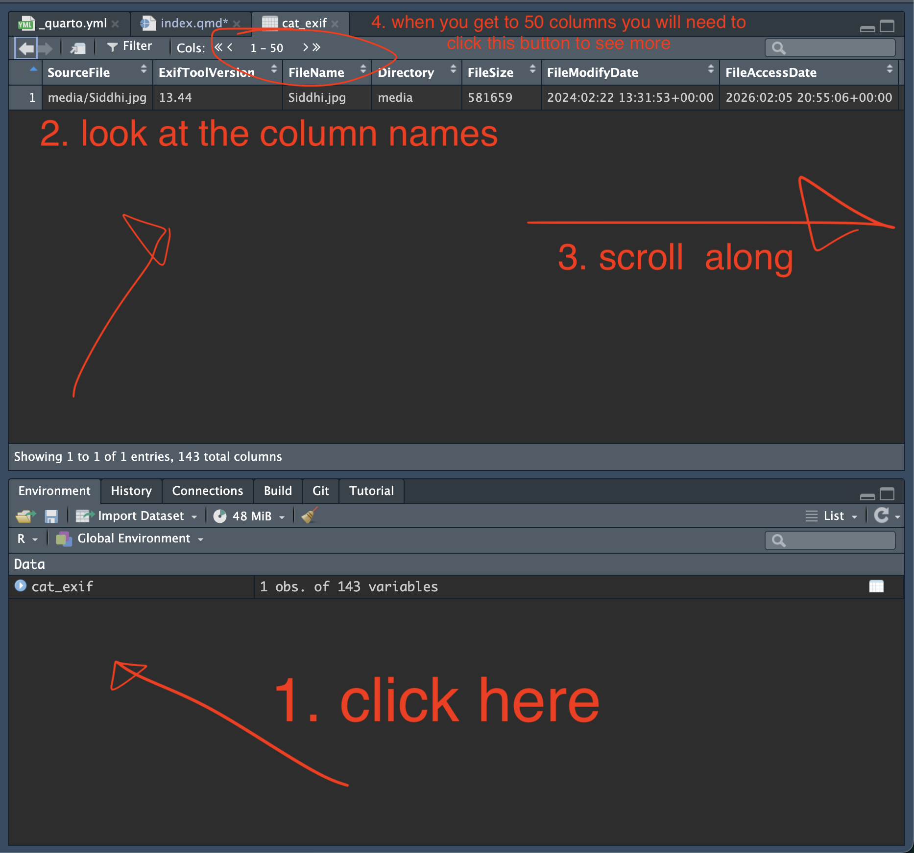
What suprised you about the infomation attached to this image?
Now load in your image and explore the metadata
Try loading in differt pictures (and file formats) and see what changes
Command Line Tools
Everything after this point is optional you do not have to use them for this class, but you might find it interesting
exiftoolR is a very useful package (and we will be making more use of it next week!) but at heart it is just an R version of the excellent set of command line EXIFTools which we can use to examine the EXIF data in more depth (and manipulate it if we want).
If you are on windows and want to use the tool just follow the instructions on the EXIFTools webpage.
If you are on a Mac you can install EXIFTools as a command line tool with ease using homebrew.
Homebrew is a package manger that allows you to install command line (and other tools) with ease, think of it as the equivalent of an app store or the install.packages function in R. 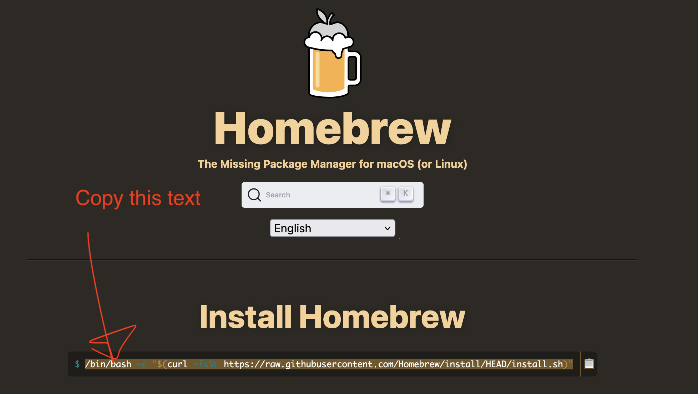
Then paste this code into the terminal.app.
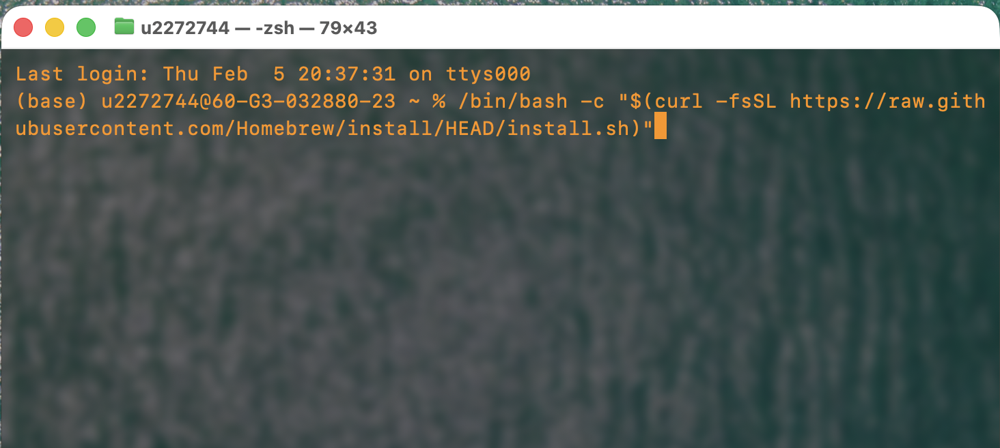
There are a series of commands we can use to move around our files in the terminal.
pwdtells us the folder you are currently inlslists all the files in the folder you are incdfollowed by a the name of a sub-folder of the folder you are currenly in navigates there..moves you back up one folder from where you are
With all these tricks down we can then move the folder where we have our photograph saved and run exiftool followed by the name of our photograph.
Working with Images in R
If we want to work directly with image files in R, we need to install some extra packages. To do this we will use the magick package which can be used to import, position and manipulate images.
#install.packages("magick", repos = "http://cran.us.r-project.org")
#install.packages("grDevices", repos = "http://cran.us.r-project.org")
library(magick)
library(grDevices) # you will also need to install this package that Magick relies onWe can then load out picture of Siddhi in as an image file
cat_picture <- image_read("media/Siddhi.jpg")We can then use the image_info funciton to get some more information on the image
image_info(cat_picture) format width height colorspace matte filesize density
1 JPEG 3060 3024 sRGB FALSE 581659 72x72Notice how this does not include any EXIF data, only the information of the picture itself.
With the image loaded in we can then plot this in R. (rather than as an image on the website as I did above)
plot(cat_picture)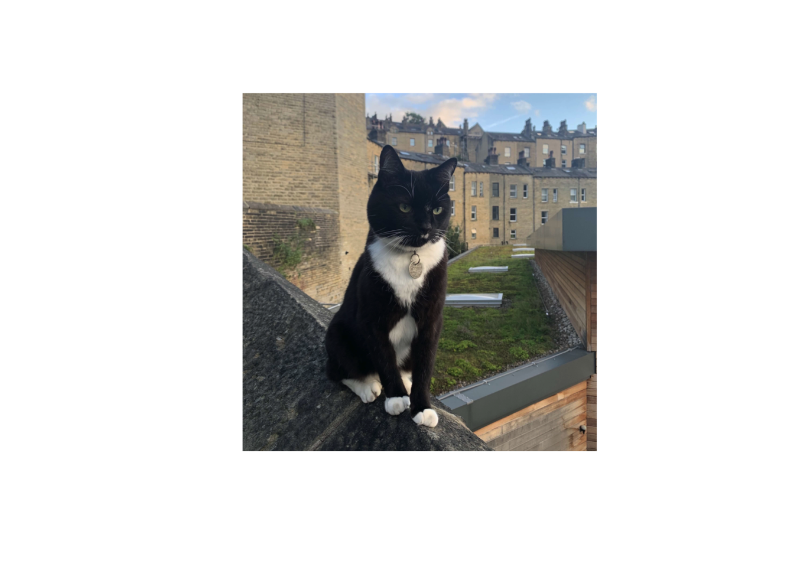
As this is now a plot in R we can add and use all the functions as if we were making a data visualization. For example we can add axis to see how the image has been scaled.
plot(cat_picture)
axis(1)
axis(2)
Notice how the values on the axis match the width and height? This is because each pixel in the picture is one point on our plot!
Before we go any further lets put siddhi the right way up!
cat_picture <- image_rotate(cat_picture, degrees = 270 )
plot(cat_picture)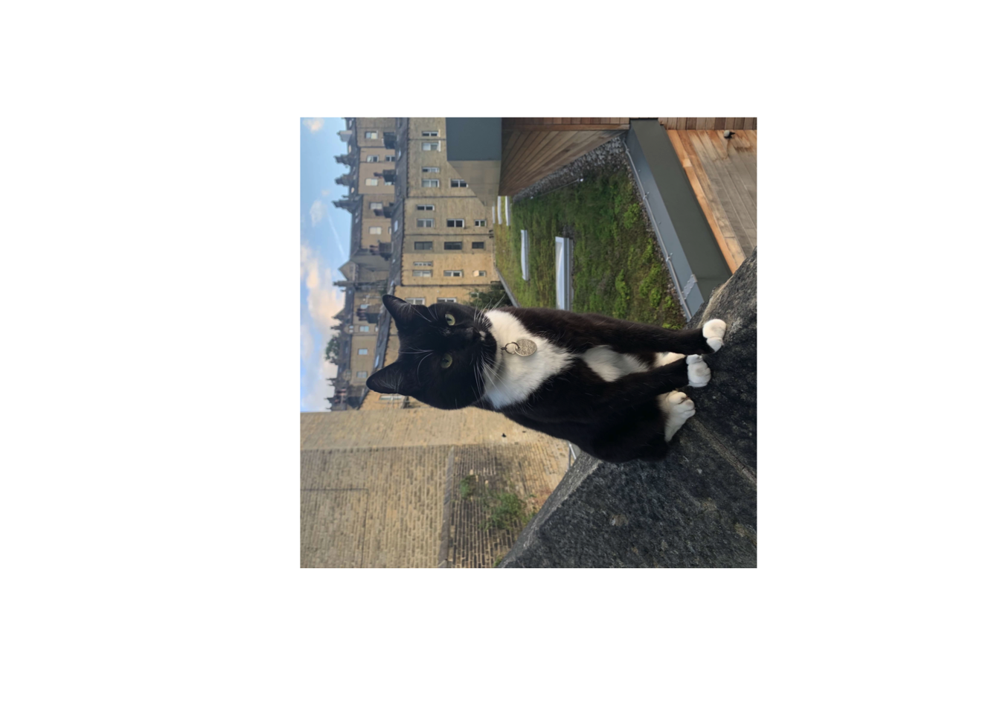
As our image is being rendered in R by the plot() function this means we can use any of our normal visulization functions around or above the image.
For example:
# we can create a blank plot
plot(-99, -99, xlim=c(0,100), ylim=c(0,100))
# and add the image to this blank plot
rasterImage(cat_picture, xleft=0, xright=100, ybottom= 0, ytop= 100)
# we can then add some data over the top
points(mtcars$mpg * 3, mtcars$qsec * 3,
col = 'red')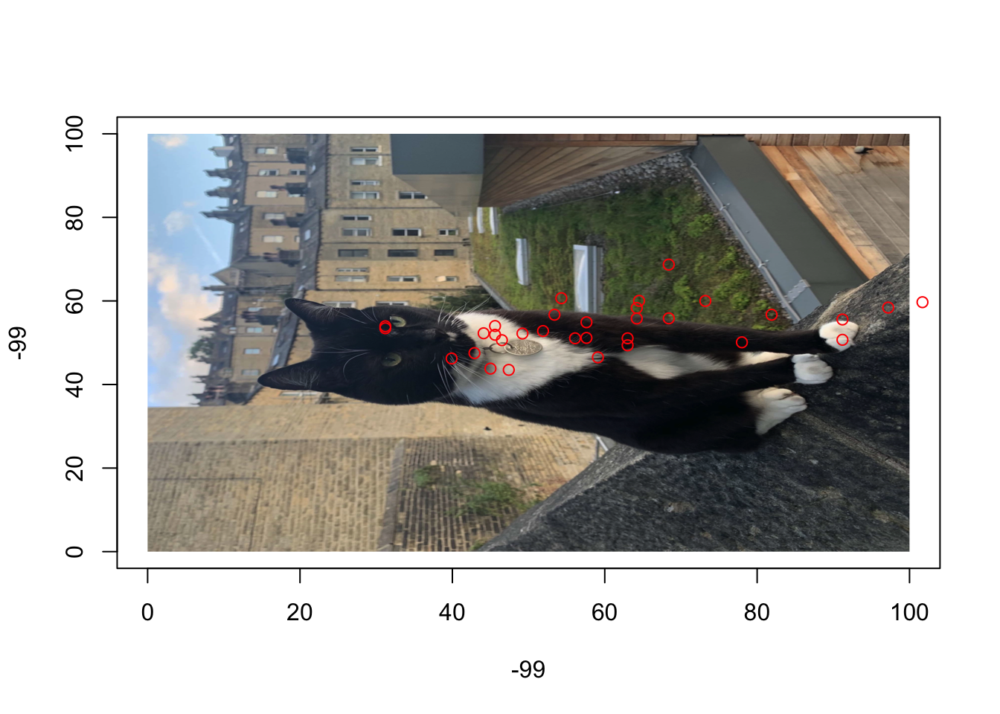
And a few more examples:
par(mfrow = c(2,2),
bg="seagreen" )
plot(-99, -99, xlim=c(0,100), ylim=c(0,100))
rasterImage(cat_picture, xleft=0, xright=100, ybottom= 0, ytop= 100)
points(mtcars$mpg * 3, mtcars$qsec * 3,
col = 'red')
plot(-99, -99, xlim=c(0,100), ylim=c(0,100))
rasterImage(cat_picture, xleft=0, xright=100, ybottom= 0, ytop= 100)
lines(mtcars$mpg * 3, mtcars$qsec * 3,
col = 'green')
plot(-99, -99, xlim=c(0,100), ylim=c(0,100))
rasterImage(cat_picture, xleft=0, xright=100, ybottom= 0, ytop= 100)
points(mtcars$mpg * 3, mtcars$qsec * 3,
col = 'orange',
pch = 17
)
plot(-99, -99, xlim=c(0,100), ylim=c(0,100))
rasterImage(cat_picture, xleft=0, xright=100, ybottom= 0, ytop= 100)
lines(mtcars$mpg * 3, mtcars$qsec * 3,
col = 'pink',
type = 's')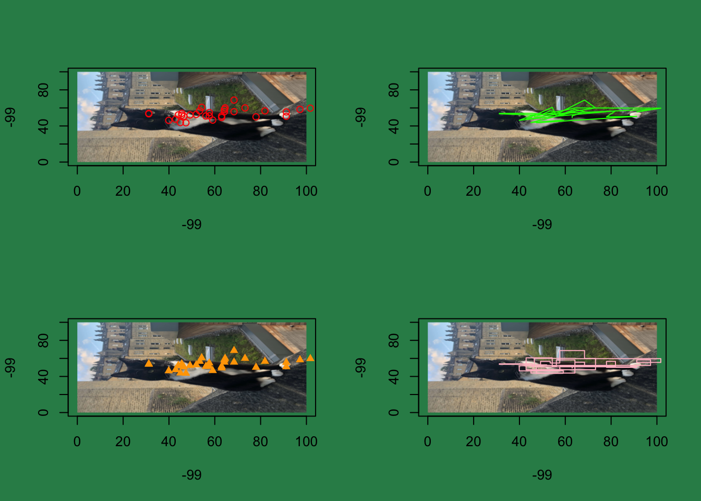
We can also use R to manipulate the image itself using functions from magick.
par(mfrow = c(1,1),
bg="white" ) # resetting our canvas
# cropping
cat_ears <- image_crop(cat_picture, "1000x1000+1000")
plot(cat_ears)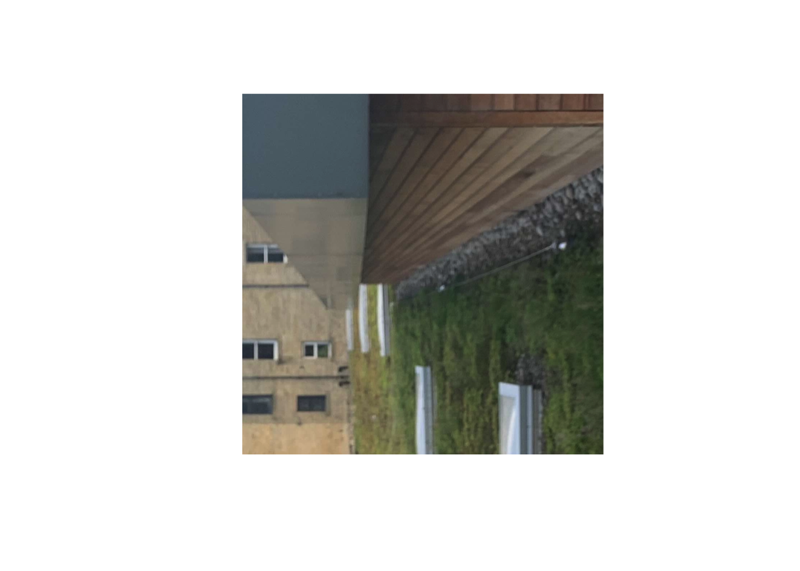
# blur
cat_blur <- image_blur(cat_picture, 30, 30)
plot(cat_blur)# invert
cat_negative <- image_negate(cat_picture)
plot(cat_negative)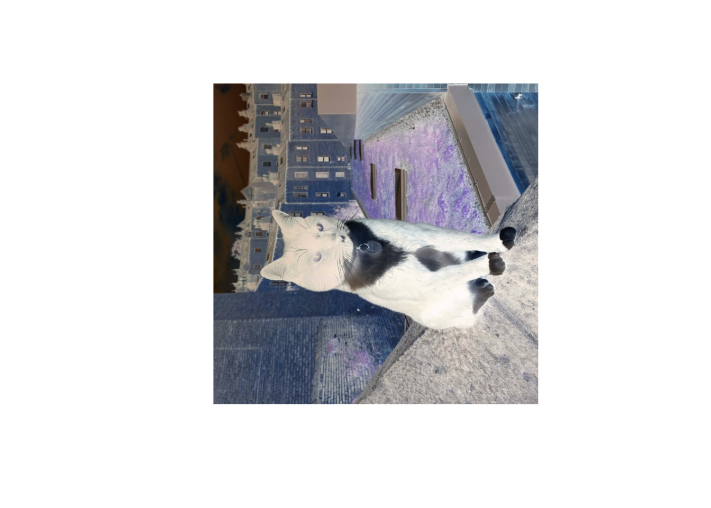
# transparency
cat_transparent <- image_colorize(cat_picture, opacity = 40, color = 'white')
plot(cat_transparent)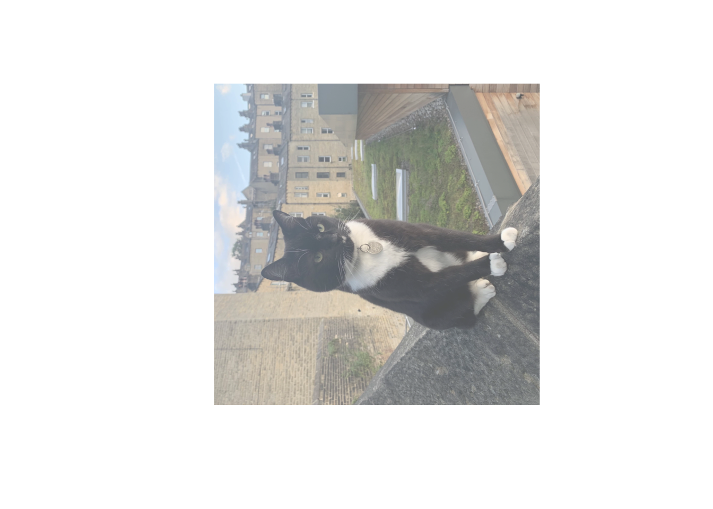
We can also use magick to perform functions on our image to change the file. (Although none of this will be saved or overwrite the orgional file unless we tell R to do this)
cat_small <- image_resize(cat_picture, "x100" )
par(mfrow = c(1,2))
plot(cat_picture)
plot(cat_small)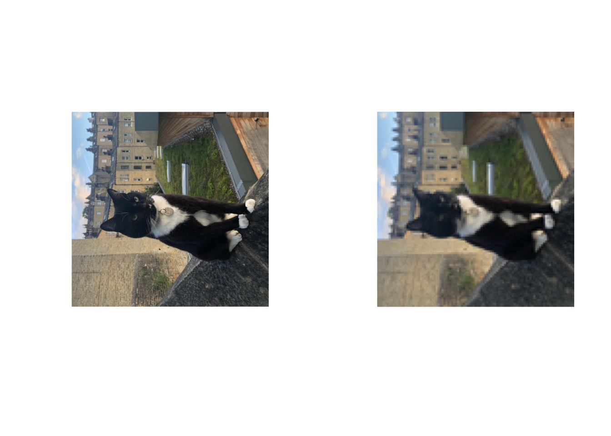
Notice how this has pixelated cat_small, as par() is still plotting the two plot() the same size as each other, even though one image is much smaller!
Most of these operations can be done with lots of other software but one of the advantages of R is that it allows us to automate some of these tasks, which might otherwise be too time consuming.
For example
# looping through 100 different transparencies
par(mfrow = c(10,10),
mar = c(0,0,0,0))
for(n in 1:100){
plot(image_colorize(cat_small,
opacity = n,
color = 'white'))
}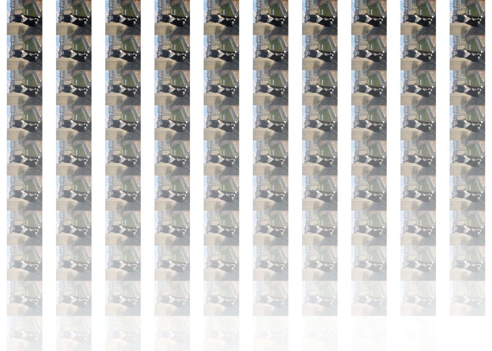
The magick library is also capable of much more complex image manipulation. Indeed, many programming languages make use of the same underlying ImageMagick code written in C for working with image data.
We are going to use the with the built in ImageMagick logo image, as this makes it easier to show off some of these more complex operations. You probably won’t need to make use of any of these features, but its good to know they are there!
# first lets reset our layout
par(mfrow = c(1,1),
bg="white" )
plot(logo) #this is the (now very retro) image magick logoimg <- image_convert(logo, colorspace = "Gray")
gradient_x <- image_convolve(img, kernel = "Prewitt")
gradient_y <- image_convolve(img, kernel = "Prewitt:90")
gradient <- c(image_fx(gradient_x, expression = "p^2"),
image_fx(gradient_y, expression = "p^2"))
gradient <- image_flatten(gradient, operator = "Plus")
plot(gradient)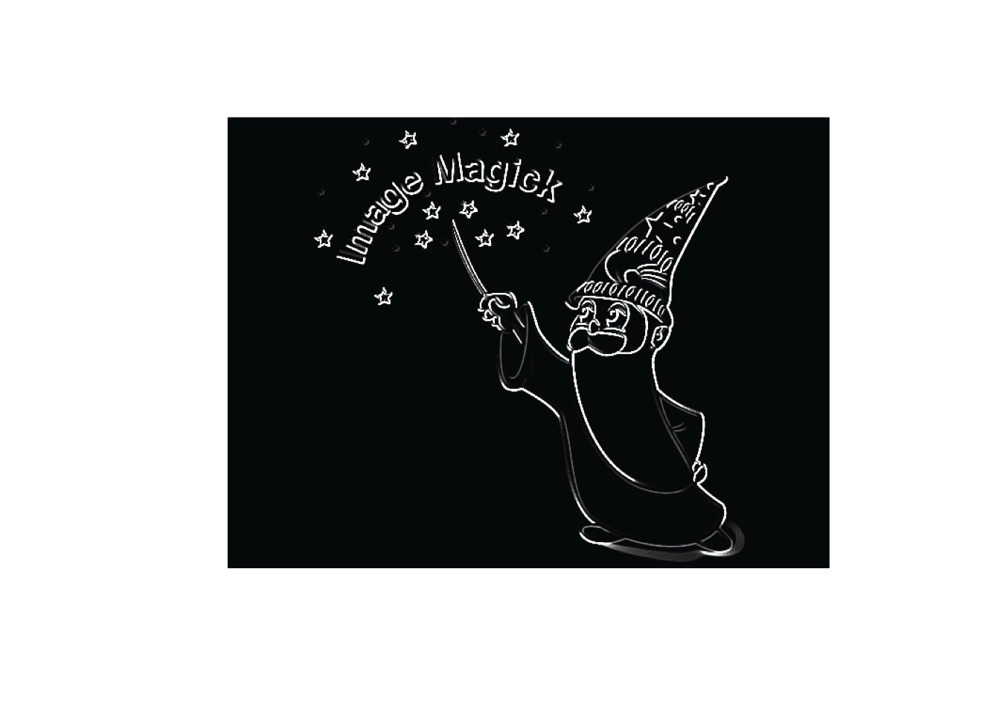